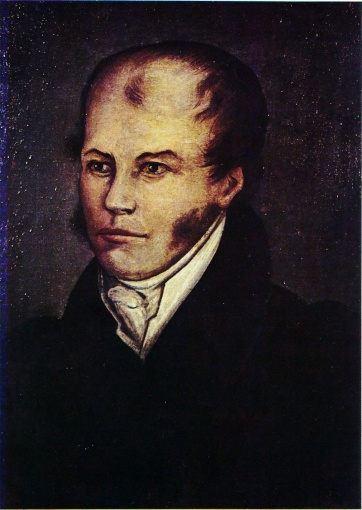
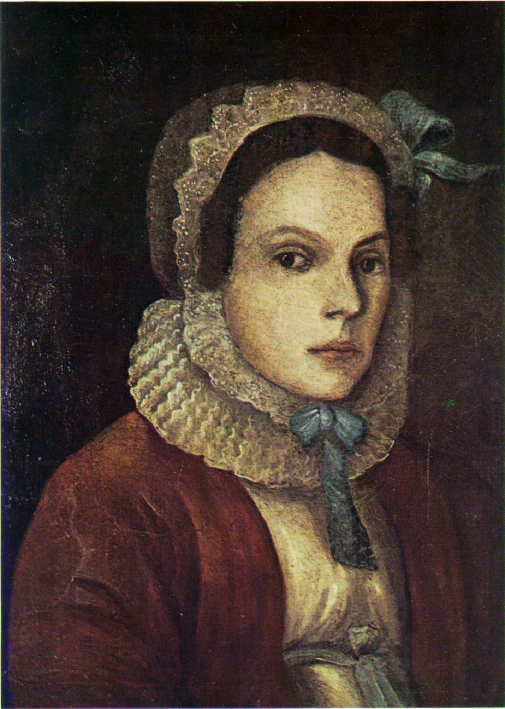

El padre de Dmitri Mendeléyev, un profesor que quedó ciego poco después de su nacimiento, falleció cuando él tenía 15 años. Su madre, María Dimitrievna, se hizo cargo de la familia trabajando en la fábrica de vidrio familiar, la cual fue destruida por un incendio que los obligó a mudarse a San Petersburgo en 1849. A pesar de las dificultades, Dmitri destacó en física y matemáticas, aunque no disfrutaba del latín. En 1850 ingresó al Instituto Pedagógico de San Petersburgo, donde se graduó en 1855, incluso tras haber contraído tuberculosis.
Padre
Ivan Pavlovich Mendeleev
Madre
Maria Dmitrievna Mendeleeva
Feozva Nikítichna Leshchiova (1862-1882) y Anna Ivánova Pópova (desde 1882)
Dmitri tuvo seis hijos: